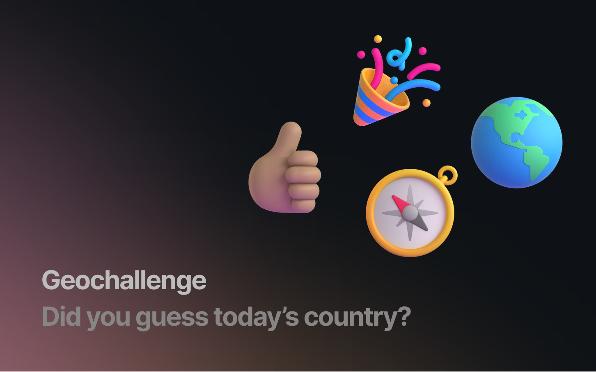
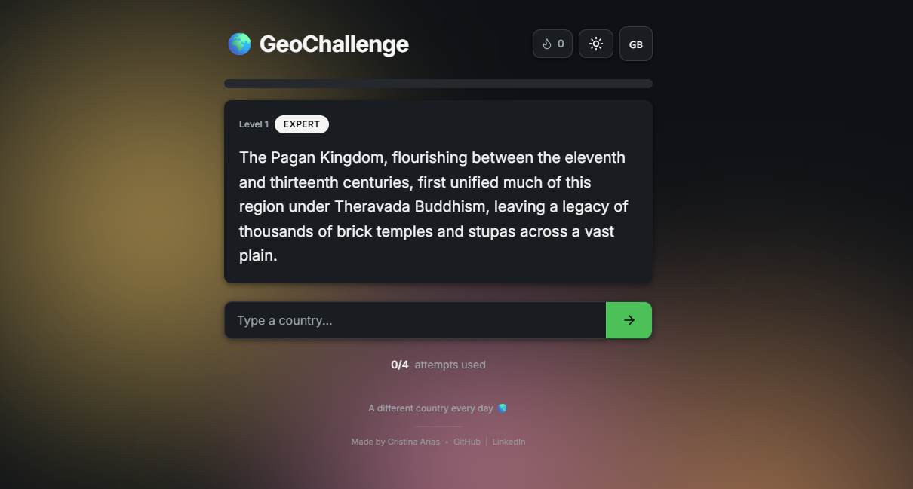
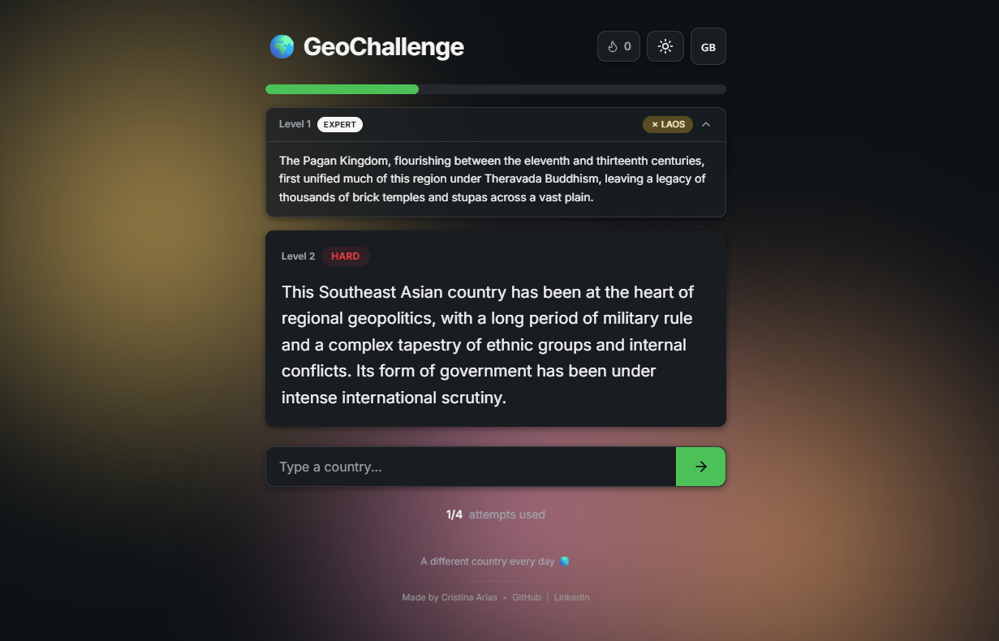
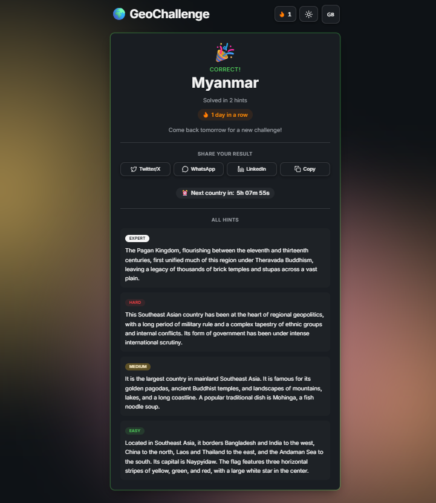
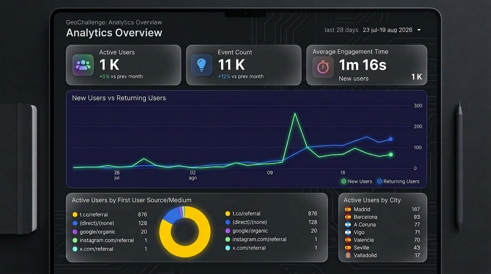

Un juego diario de geografía tipo Wordle: adivina un país a partir de 4 pistas progresivas basadas en datos curiosos, no en mapas. Bilingüe (ES/EN), con una aurora de color que cambia según la hora del día.

Antes de diseñar nada, investigué más de 50 juegos de geografía existentes (GeoGuessr, Sporcle y varios clones de Wordle). El patrón era claro: el 95% se basa en mapas y reconocimiento de formas — un formato mecánico, poco educativo y ya saturado. Ahí vi el hueco: no había ningún juego diario construido sobre datos curiosos de geografía en vez de sobre geografía visual.
La propuesta: el mismo país para todo el mundo cada día (crea comunidad, como Wordle), con pistas progresivas de Experto a Fácil que premian saber cosas poco conocidas y enseñan algo nuevo aunque falles. Target: viajeros, amantes de la geografía y fans de este tipo de retos diarios.
Exploré varias direcciones y descarté las que no aportaban diferenciación o metían scope creep:
"Perfecto para mi café de la mañana ☕" — comentario real de una usuaria
Mismo país para todo el mundo, calculado de forma determinista a partir de la fecha UTC. Cambia cada 24h.
Experto (dato que solo un 5% sabría) → Difícil → Medio → Fácil (capital, símbolo obvio).
Mejora sobre la idea original: al avanzar a la siguiente pista, las anteriores no desaparecen — se convierten en desplegables que puedes volver a abrir. Ver todo el contexto a la vez es más lógico para adivinar, y los usuarios lo agradecen frente a perder información.
La paleta de color cambia según la hora del día: cálidos por la mañana, amarillos al mediodía, rosas/naranjas al atardecer, púrpuras y azules por la noche.
Interfaz y pistas completas en ambos idiomas, con un toggle que no hace perder el progreso de la partida.
Normalización de texto (acentos, mayúsculas), 195 países validados y autocompletado con sugerencias.
Racha diaria guardada en localStorage para mantener el hábito de volver cada día.
Comparte tu resultado sin revelar el país (estilo Wordle), mostrando cuántas pistas necesitaste. Enlaces directos a Twitter, WhatsApp y LinkedIn.
Google Analytics visualizado dentro del propio producto: KPIs interactivos y gráficos de tráfico y usuarios.



Estructurar cada partida en 4 niveles de pista (Experto → Fácil), cada uno con un dato curioso distinto sobre el país.
Maximiza el engagement (quieres seguir jugando para desbloquear la siguiente pista) y convierte cada partida en una mini lección de geografía, que es justo el hueco que detecté en la competencia.
Pistas básicas de un solo nivel: se descartaron porque no aportaban ninguna diferenciación frente al resto del mercado.
La paleta de color de fondo cambia automáticamente según la hora del día de quien juega.
Da al producto una identidad visual reconocible sin depender de ilustración o branding pesado, y hace que volver cada día se sienta distinto.
Una interfaz con tema estático: más simple de construir, pero sin ningún diferenciador visual frente a otros daily games.
Guardar racha y progreso en el navegador (localStorage) en lugar de montar una base de datos con backend propio.
Permitía lanzar en 2-3 semanas y validar la idea con usuarios reales antes de invertir tiempo en infraestructura que quizá no hiciera falta.
Backend con base de datos: se descartó para el MVP por tiempo y porque no era necesario para validar la hipótesis del producto.
React 19 · Vite · TypeScript · Lovable · Vercel · localStorage (sin backend en el MVP).
¿Por qué Lovable?
Métricas de las primeras 4 semanas tras el lanzamiento:
Origen del tráfico:

Los propios usuarios pidieron más países — la siguiente iteración natural del roadmap.